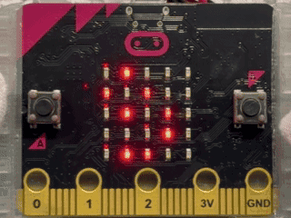
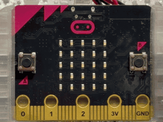
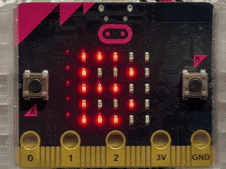
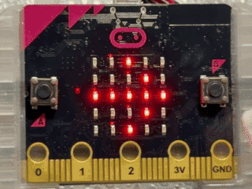
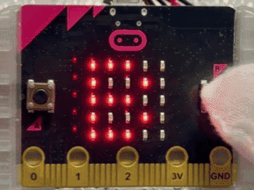

三角食べナビ 三角食べナビ
このプログラムでは、micro:bitを使って、きゅうしょくの三角食べで食べるものをシ・サ・フの3しゅランダムひょうじして、食べたものを消していけるナビです。
シ・サ・フ・ス・ユ・クの意味
・シ＝主食
・サ＝しゅさい
・フ＝ふくさい
・ス＝しるもの
・ユ＝ぎゅうにゅう
・ク＝くだもの
このプログラムでは、micro:bitを使って、給食の三角食べで食べるものをシ・サ・フの3種ランダム表示して、食べたものを消していけるナビです。
シ・サ・フ・ス・ユ・クの意味
・シ＝主食
・サ＝主菜
・フ＝副菜
・ス＝汁物
・ユ＝牛乳
・ク＝果物
使い方
- さいしょにちゅうせんアニメのあと、シ・サ・フをランダムひょうじ 最初に抽選アニメのあと、シ・サ・フをランダム表示
- Aボタンでちゅうせんアニメのあと、シ・サ・フをランダムひょうじ Aボタンで抽選アニメのあと、シ・サ・フをランダム表示
- Bボタンでシ→サ→フのじゅんに切りかえひょうじ Bボタンでシ→サ→フの順に切り替え表示
- A+Bボタンでひょうじされているものを「食べた」チェックとして外す A+Bボタンで表示されているものを「食べた」チェックとして外す
- 全部食べたら「うれしい顔」をひょうじ 全部食べたら「嬉しい顔」を表示

ねらい
- 三角食べのいしきづけ 三角食べの意識付け
- ランダムひょうじと切りかえそうさの学習 ランダム表示と切り替え操作の学習
- 食べたものをチェックしていくじょうたいかんり 食べたものをチェックしていく状態管理
チャレンジ
- シ・サ・フ・ス・ユ・クの6しゅすべてにアップデートするルール作り シ・サ・フ・ス・ユ・クの6種すべてにアップデートするルール作り
- ス・ユ・クを入れるタイミングを決めるじゅんばんルール作り ス・ユ・クを入れるタイミングを決める順番ルール作り
- ちゅうせんアニメやチェックのしるしのひょうじへんこう 抽選アニメやチェックの印の表示変更
かんじょうひょうげんツール 感情表現ツール
このプログラムでは、micro:bitを使って、今の気持ちを4しゅるいの顔アイコンでえらんで見せられるかんじょうひょうげんツールです。
ひょうじされる気持ち
・うれしい顔＝うれしい気持ちのひょうじ
・おこった顔＝おこっている気持ちのひょうじ
・悲しい顔＝悲しい気持ちのひょうじ
・びっくり顔＝おどろいたりワクワクしたりする気持ちのひょうじ
このプログラムでは、micro:bitを使って、今の気持ちを4種類の顔アイコンで選んで見せられる感情表現ツールです。
表示される気持ち
・嬉しい顔＝嬉しい気持ちの表示
・怒った顔＝怒っている気持ちの表示
・悲しい顔＝悲しい気持ちの表示
・びっくり顔＝驚いたりワクワクしたりする気持ちの表示
使い方
- Bボタンで顔のひょうじを次へ切りかえる Bボタンで顔の表示を次へ切り替える
- びっくり顔まで行ったら次はうれしい顔にもどる（くり返し） びっくり顔まで行ったら次は嬉しい顔に戻る（繰り返し）
- ひょうじした顔を見せて今の気持ちをつたえる 表示した顔を見せて今の気持ちを伝える

ねらい
- 言葉にしにくい気持ちを顔でつたえるたいけん 言葉にしにくい気持ちを顔で伝える体験
- ボタンをおすたびにひょうじがかわる仕組みのりかい ボタンを押すたびに表示が変わる仕組みの理解
- 気持ちを見て自分や友だちの様子に気づくきっかけ作り 気持ちを見て自分や友だちの様子に気づくきっかけ作り
チャレンジ
- 気持ちに合わせた一言メッセージを自分で決めてみる 気持ちに合わせた一言メッセージを自分で決めてみる
- 朝の会や帰りの会でみんなの気持ちをたしかめる使い方 朝の会や帰りの会でみんなの気持ちをたしかめる使い方
- 4しゅるいの顔をべつの顔に入れかえて自分用のセットを作ってみる 4種類の顔を別の顔に入れ替えて自分用のセットを作ってみる
ジャンプの強さをはかってみよう ジャンプの強さを測ってみよう
このプログラムは、micro:bitの「かそくどセンサー」を使って、ジャンプしたときのいちばん大きい動きの強さをはかり、きろくすることができるジャンプけいそくツールです。 このプログラムは、micro:bitの「加速度センサー」を使って、ジャンプしたときのいちばん大きい動きの強さをはかり、記録することができるジャンプ計測ツールです。
使い方
- さいしょは「B」と「→」をこうごにひょうじ 最初は「B」と「→」を交互に表示
- Bボタンでそくていスタート（さいだいちをリセット） Bボタンで測定スタート（最大値をリセット）
- スタートの合図として「ト」「ベ」のカタカナをひょうじ スタートの合図として「ト」「ベ」のカタカナを表示
- 「トベ」が出たらジャンプして動きの強さを出す 「トベ」が出たらジャンプして動きの強さを出す
- もう一度Bボタンでそくていストップ、さいだいちの数字をひょうじ もう一度Bボタンで測定ストップ、最大値の数字を表示

ねらい
- ジャンプの動きをかそくどセンサーによってすうちで表すたいけん ジャンプの動きを加速度センサーによって数値で表す体験
- いちばん大きい数だけをのこす仕組みのりかい いちばん大きい数だけを残す仕組みの理解
- ジャンプのしかたをかえてくらべる活動作り ジャンプのしかたを変えて比べる活動作り
チャレンジ
- カウントダウンひょうじをついかしてみる カウントダウン表示を追加してみる
- ジャンプ回数を決めるルール作り ジャンプ回数を決めるルール作り
- クラスでさいこうきろくをくらべるランキング作り クラスで最高記録を比べるランキング作り
教室明るさちょうさマップ 教室明るさ調査マップ
このプログラムでは、micro:bitの「ヒカリセンサー」を使って、教室の場所ごとの明るさを調べる活動を行うことができます。 このプログラムでは、micro:bitの「ヒカリセンサー」を使って、教室の場所ごとの明るさを調べる活動を行うことができます。
使い方
- さいしょは「B」と「→」をこうごにひょうじ 最初は「B」と「→」を交互に表示
- 調べたい場所に立ってBボタンをおす 調べたい場所に立ってBボタンを押す
- ひょうじされた明るさの数字をメモする 表示された明るさの数字をメモする
- 数字のあとに出る「アカルイ／クライ」をメモする 数字のあとに出る「アカルイ／クライ」をメモする
- べつの場所にいどうして2〜4をくり返す 別の場所に移動して2〜4を繰り返す
- 集めたメモを見て教室の明るさマップをつくる 集めたメモを見て教室の明るさマップを作る

ねらい
- 明るさを数字でくらべるたいけん 明るさを数字で比べる体験
- 場所による光のちがいへの気づき 場所による光の違いへの気づき
- 調べたけっかをまとめてつたえる活動 調べた結果をまとめて伝える活動
チャレンジ
- まどぎわや黒板前など場所の分け方のくふう 窓際や黒板前など場所の分け方の工夫
- アカルイ／クライのきじゅんのすうちを見直す アカルイ／クライの基準の数値を見直す
- はんのけっかを合わせた教室全体マップづくり 班の結果を合わせた教室全体マップづくり
かけ算○×クイズ かけ算○×クイズ
このプログラムでは、micro:bitを使って、かけ算の式が正しいかどうかを○×で答えるクイズ学習を行うことができます。 このプログラムでは、micro:bitを使って、かけ算の式が正しいかどうかを○×で答えるクイズ学習を行うことができます。
使い方
- さいしょは「B」と「→」をこうごにひょうじ 最初は「B」と「→」を交互に表示
- Bボタンで問題をひょうじ Bボタンで問題を表示
- ひょうじされた式を見て正しいかどうか考える 表示された式を見て正しいかどうか考える
- Aボタンで○と×の切りかえそうさ Aボタンで○と×の切り替え操作
- Bボタンで答えを決定 Bボタンで答えを決定
- せいかいならうれしい顔、ふせいかいならかなしい顔をひょうじ 正解なら嬉しい顔、不正解なら悲しい顔を表示
- ひょうじ後に開始画面へ自動でもどる 表示後に開始画面へ自動で戻る

ねらい
- かけ算の答えをたしかめるはんぷく練習 かけ算の答えを確かめる反復練習
- 正しいかどうかをはんだんする仕組みのりかい 正しいかどうかを判断する仕組みの理解
- 自分の考えをすぐにたしかめる学習 自分の考えをすぐに確かめる学習
チャレンジ
- たし算やひき算の○×クイズへの作りかえ たし算やひき算の○×クイズへの作りかえ
- 正しくない式の作り方のルールへんこう 正しくない式の作り方のルール変更
- れんぞくで何問せいかいできたかのきろくづくり 連続で何問正解できたかの記録づくり
本情報の内容 (添付文書、リンク先などを含む) は、作成日時点でのものであり、予告なく変更される場合があります。